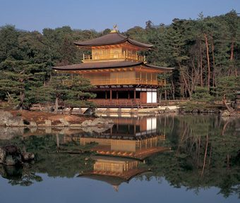

This Zen temple was founded in 1397 by the Muromachi Shogun, Ashikaga Yoshimitsu. Formal name, Rokuon-ji. The pavilion enshrines a piece of bone of the Buddha. The 2nd and 3rd stories are covered with gold leaf. Reconstructed in 1955. The most famous place in northwestern Kyoto.
Return